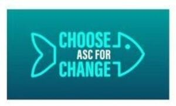

Trade Mark Journal No.2025/037 12 September 2025
WO0000001871388 (35,42)
Office of origin: European Union Intellectual Property Office (EUIPO)
Date of International Registration:4 July 2025
Date of designation in the UK:
4 July 2025

Blue, green blue/teal, aqua blue, turquoise, blue green and white.
International priority date claimed: 17 February 2025
(European Union Intellectual Property Office (EUIPO))
(019143923)
- Class 35
- Advertising and promotional services; advertising services to promote public awareness of sustainable and responsible fish farming, aquaculture and edible fish and seafood; market campaigns; management of commercial matters; business administration; administrative services, also within the framework of the coordination of global standardization for sustainable and responsible aquaculture; market surveys, research and analysis; business organizational and economic consulting; management of marketing services; rental of advertising materials; business research; public relations services; marketing research; organization of exhibitions for commercial or publicity purposes; opinion polling; organization of trade fairs for commercial or publicity purposes; rental of advertising time on communication media; all mentioned services related to sustainable and responsible fish farming, aquaculture and edible fish and seafood.
- Class 42
- Advising and providing information on environmental protection, sustainable and responsible fish farming and aquaculture; drafting quality inspection regulations in regard to compliance with requirements for sustainable and responsible aquaculture; drafting and testing services for standards, certification criteria and assessment guidelines; carrying out quality inspection activities; testing products, services and systems against certification criteria; monitoring the quality of the products and services of third parties as well as issuing certificates to these third parties; drafting and issuing quality statements; comparative research into the quality of goods and services; supervising standardization activities, including the drafting of quality rules (standards), as well as monitoring compliance with them; all the aforementioned services in the field of sustainable and responsible fish farming, aquaculture and edible fish and seafood.
Stichting Aquaculture Stewardship Council Foundation
Representative: MERKENBUREAU KNIJFF & PARTNERS B.V., Leeuwenveldseweg 12, NL-1382 LX Weesp, NETHERLANDS